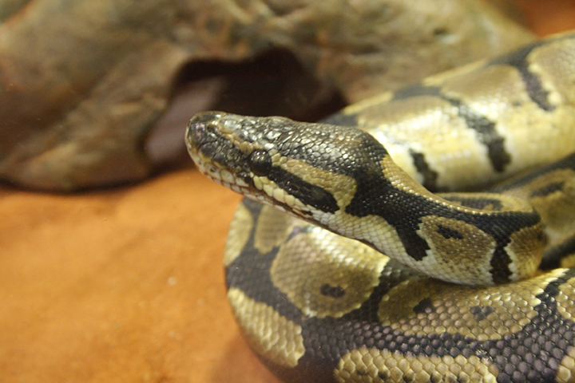

Ball pythons, and snakes in general, are amazing creatures. Although they may not create an emotional attachment,
they are fantastic animals to keep and own. Needing minimal care and maintenance.
Many people have an innate fear of snakes, claiming they are slimy or scary. In a closer look though, they are beautiful creatures that are a very important part of our ecosystem.
One of the amazing things about them is the "morphs" that they can have. Although morphs are nothing more than a physical difference of a Ball Python. These morphs are
highly sought after and bred out of them to produce some truly beautiful specimens.
The above pictures are examples of what a morph is. Usually only resulting in a difference of color in the snake, they are gorgeous and definitely eye-catching differences from the normal colors of the python.
With how many types of morphs there are out in the world, it can be confusing to keep up with them all.
As of yet, this is an uncompleted list of the morphs, but I plan to work on and eventually complete a list with pictures to help show and educate others. On just how many variations of Ball Pythons there are, and hopefully clear the confusion that all snakes are bad or scary.